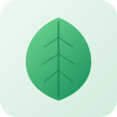
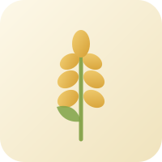
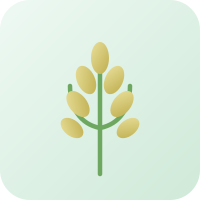
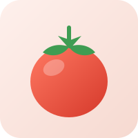
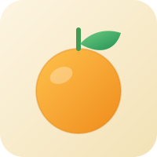
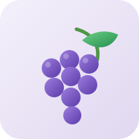
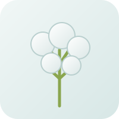

Leafy greensSpinach · KaleLIVE FIELD/North Field
Farm intelligence at a glance.
Live conditions, shaped by your connected sensor.
FIELD CONDITIONWaiting for readingsSensor reading pendingAwaiting data
Connecting to your fieldEstablishing a secure local connection
CONNECTING
FIELD VIEWNorth Field
LIVE SENSOR
ESP32 FIELD NETWORKWaiting for sensor data
CROP LIBRARY
Every crop you grow.
Reference illustrations for the crops AgriSense screens and recommends, so the whole field library stays visible at a glance.

WheatCereal · Grain
RicePaddy · Cereal
TomatoSolanaceae
CitrusOrchard · Fruit
GrapeVineyard · Fruit
CottonFibre · Cash crop FIELD LOCATION
GPS field map.
View your saved farm location on the map. GPS capture is opt-in and does not run in the background.
Checking connectionNo GPS fix
⌖Waiting for GPS locationCapture a fix to display your site coordinates here.
Offline coordinate view · not a tiled map
Loading OpenStreetMap…
Open full map ↗
SITE INTELLIGENCE
Find the right crop for your land.
Compare crops and growing methods using your land, water, and budget. See how each option matches your conditions.
✳ CLEAR, RULE-BASED GUIDE
What you’ll need: basic site measurements, available water, land size, your budget, and local crop prices/costs. Enter measurements below or import a CSV/JSON summary. Demo values are for practice only. Results are a guide—not a guaranteed harvest or substitute for local farming advice.
AI ADVISOR
The planning brain.
The agricultural AI core: live weather, soil and NASA POWER climate normals, a trained agricultural-state model, rule-based plant colour analysis, crop knowledge retrieval, and a deterministic irrigation controller that has the final say.
✳ CHECKING…
Starting…
How this AI is trained, and what it cannot do
Loading disclosure…
Coverage gaps are reported rather than guessed at: NPK, NDVI and salinity are marked unavailable because no free, unauthenticated source for them is integrated. No pump or reservoir hardware is wired up — the irrigation output is a recommendation and a log entry only. Nothing here replaces local agronomic advice.
Air temperature
—°CAwaiting data
Environmental sensor
10°Comfort zone35°
Air humidity
—%Awaiting data
Relative humidity
LowBalancedHigh
Water reserve
—%Awaiting data
No water sensor data
LowAvailableFull
FIELD RHYTHM
Conditions over time
Soil moisture and temperature, as they happen.
Soil moistureTemperatureNo readings yet
⌁
Waiting for your first readingConnect a sensor or try demo readings.CONNECTED HARDWARE
Field devices
| DEVICE | STATUS | LAST SEEN | SOIL |
|---|---|---|---|
| No sensor devices detected yet. | |||
ATTENTION
Field alerts
✓
All clear for nowNew field alerts will appear here.